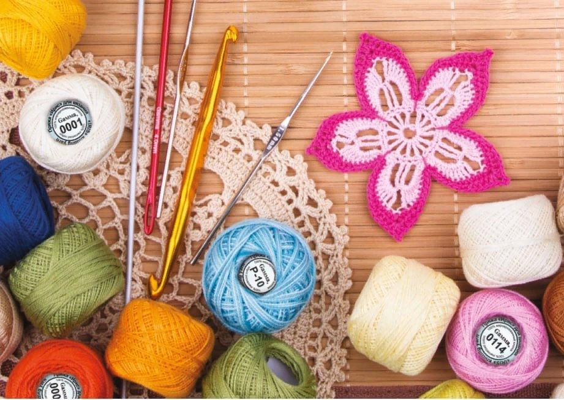

Вязание

Историческая справка:
Историческая справка:
Первые упоминания о вязаных изделиях появились в документах 19 в. до н. э. На египетской пирамиде есть изображение женщин в вязаных носках и вязаных жакетах. Эти предметы гардероба удивительно напоминают современные. В египетской гробнице сохранилась изготовленная из шерсти детская туфелька, относящаяся к тому же периоду. Если ремесло было развито уже во времена фараонов, значит, его корни уходят невероятно глубоко.
Моя история:Вязание вошло в мою жизнь еще в детстве. Мама всегда вязала и всегда делала это отлично! Красивые вязаные кофты, шарфы и салфетки вдохновляли меня на новые подвиги в покорении вершин рукоделия.